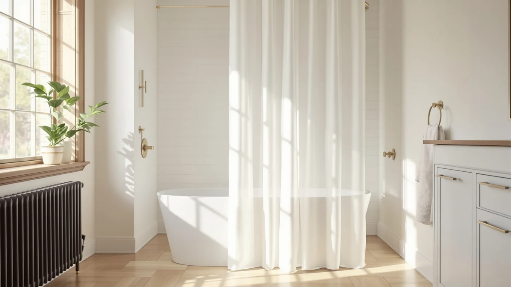

Quick Answer
The Barossa Design Shower Curtain Liner is the best shower curtain liner that doesn't stick to you for most bathrooms. Its weighted hem and heavier PEVA panel keep it hanging close to the tub wall instead of drifting inward, and it backs that up with a 4.5-star average across 91,634 verified reviews. If you would rather skip vinyl altogether, the fabric picks below hang even heavier and clear the same problem a different way.
Our pick: Barossa Design Shower Curtain Liner — $9.99 Check Price on Amazon
Bottom line: our top pick is the Barossa Design Shower Curtain Liner with 6 Magnets - Heavy at $9.99. The best budget option is the AmazerBath Shower Curtain Liner at $6.99.
Things to Know Before You Buy
- Weight along the hem matters more than the material name on the label. A liner or curtain that carries extra weight at the bottom, whether from a woven hem, magnets, or a heavier fabric blend, resists the inward pull that steam creates far better than a thin, hemless panel.
- Fabric curtains solve the sticking problem differently than PEVA liners do. Three of the seven picks in this guide are fabric shower curtains rather than plastic liners. They weigh more per square foot, so they hang straighter, though most buyers still run a separate waterproof liner behind one.
- Review counts vary by a wide margin across this lineup. The Barossa top pick has 91,634 verified reviews behind its 4.5-star average, while the Naturoom linen curtain has only 1,340, so weigh rating against sample size before you decide.
- Standard sizing runs 72 by 72 inches. Six of the seven picks here fit that footprint. The Mrs Awesome pick runs 72 by 84 inches for taller showers, so measure your rod before ordering if your bathroom is close to the edge on either dimension.
- Price spans from $6.99 to $12.13 across the seven picks in this guide, and the weighted and magnetic alternatives elsewhere on this site cost more but target the clinging problem even more directly.
Finding the best shower curtain liner that doesn't stick to you comes down to one thing most listings never mention: weight along the bottom edge. A hot shower sends steam up inside the tub or stall, and a thin, lightweight panel has nothing to hold it in place against that pull, so it drifts in and wraps around your legs mid-rinse. Heavier fabric and a weighted hem change that behavior.
I'm Ilane Tall, and I cover bath and shower gear for Best Shower Curtains. For this guide, I compared seven liners and fabric curtains on the details that decide whether a panel clings or hangs still: stated material, panel weight class, size, price, and what verified buyers report once the product has spent time in a real bathroom. The Barossa Design Shower Curtain Liner comes out on top for most people, thanks to its weighted hem and the deepest review history in this lineup.
Not every pick here is a plastic liner. Three of the seven are fabric shower curtains, included because a heavier poly-blend panel resists the same inward pull that makes thin PEVA cling, just through added weight rather than a built-in hem. Whether you want to replace a liner outright or pair a heavier curtain with one, the seven picks below cover both routes to a shower that doesn't stick to you.
Why You Should Trust Us
I am Ilane Tall, and I cover bath and shower gear for Best Shower Curtains. For this guide to the best shower curtain liner that doesn't stick to you, I focused on the one factor most buyers overlook when a liner keeps clinging: whether the panel carries enough weight along its hem or across its full width to resist the pull of rising steam.
We do not own or install every product we cover. Instead we research each listing closely, cross-check the stated material, weight class, and size against the manufacturer's own description, and weigh star ratings against review volume, since a 4.5-star average built on 91,634 reviews tells you far more than the same average built on 1,340. Every price, material, and rating in this guide comes from the current Amazon listing.
How We Picked
We started with a wide list of shower curtain liners and fabric curtains marketed as resistant to clinging or sticking, then narrowed the field to listings with a stated material, a clear panel size, and a rating above 4.3 stars. We cut any listing that lacked a size specification, since a liner that does not state its dimensions is a gamble on fit.
Because buyers hunting for a shower curtain liner that doesn't stick to you often end up debating whether to fix the problem with a liner upgrade or a heavier fabric curtain, we included both paths in this lineup. Price across the seven picks ranges from $6.99 for the least expensive liner to $12.13 for the linen-look fabric option.
How We Compared
We compared each pick in this guide on the same facts: stated material, weight class implied by that material, panel size, current price, and star rating and review count where the listing provides them, all pulled directly from the live Amazon listing rather than promotional copy. We treated a heavier fabric blend or a weighted hem as the main signal for resisting the clinging problem this guide is built around.
We also weighed review count against rating, since a strong average built on a small sample carries less weight than the same average built on tens of thousands of purchases. The Barossa Design Shower Curtain Liner carries the deepest evidence base in this guide at 91,634 reviews, while the Naturoom linen curtain has the smallest review count of the seven, a tradeoff worth knowing before you buy.
Our Picks

Barossa Design Shower Curtain Liner
What we like
- Weighted hem designed to keep the panel anchored against the tub instead of billowing inward
- Deepest review history in this guide, at 91,634 verified ratings
- Priced under $10 while carrying a 4.5-star average
- PEVA construction stays flexible on standard shower curtain hooks
Flaws but not dealbreakers
- Still a synthetic PEVA panel rather than fabric, so it won't drape as heavily as the fabric picks below
- Standard 72x72 sizing may run short for walk-in showers taller than a standard tub
| Material | Polyester / PEVA |
| Size | 72x72 |
The Barossa Design Shower Curtain Liner is the best shower curtain liner that doesn't stick to you for most bathrooms because it pairs a weighted hem with the deepest evidence base of any pick in this guide. Owners report that the added weight along the bottom edge keeps the panel sitting flush against the tub wall through a full shower, rather than pulling inward as steam builds.
At $9.99, it costs less than most of the fabric alternatives below while holding a 4.5-star average across 91,634 verified reviews, the strongest sample size in this lineup by a wide margin. The standard 72 by 72 inch size fits most tubs and stalls without alteration, and many buyers who switched say the hem weight is what finally kept the panel in place better than the liner it replaced.

N&Y HOME Fabric Shower Curtain
What we like
- Fabric weight resists the inward pull that makes thin liners cling to you
- Second-highest rating in this guide, at 4.6 stars across 68,277 reviews
- Priced under $8, among the least expensive picks here
Flaws but not dealbreakers
- Most buyers still need a separate waterproof liner behind it
- Fabric absorbs some water, so it takes longer to dry than a PEVA panel
| Material | Polyester / PEVA |
| Size | 72x72 |
The N&Y HOME Fabric Shower Curtain takes a different approach to the same problem: instead of a weighted hem on a plastic panel, it uses a poly-blend fabric that carries more weight across its full width. That extra weight is what keeps a fabric curtain from getting pulled in by rising steam the way a thin liner does.
At $7.99, it undercuts the Barossa pick above while holding a slightly higher 4.6-star average across 68,277 verified reviews. The standard 72 by 72 inch size fits most tubs and stalls, and buyers researching a shower curtain liner that doesn't stick to you often land here specifically because a fabric panel drapes straight down rather than billowing. The tradeoff is that most owners still hang a separate waterproof liner behind it for full coverage.

Mrs Awesome Extra Long Shower
What we like
- 72 by 84 inch size covers taller showers where standard curtains stop short
- Fabric weight helps the extra length hang flat instead of bunching or clinging
- 4.5-star average across 29,377 verified reviews
Flaws but not dealbreakers
- Smaller review base than the Barossa or N&Y picks above
- The added length only helps if your shower rod sits high enough to use it
| Material | Polyester / PEVA |
| Size | 72x84 |
The Mrs Awesome Extra Long Shower curtain is the pick in this guide built for a specific sizing problem: a standard 72 by 72 inch panel that stops short of the floor on a taller shower, leaving a gap where steam pulls the fabric inward. At 72 by 84 inches, it covers more of the wall and gives the extra weight of the fabric more surface to work against.
At $7.99, it matches the N&Y HOME pick on price while holding a 4.5-star average across 29,377 verified reviews. If your bathroom uses a standard-height rod, the extra 12 inches of length is wasted, but for a walk-in shower or a tub with a taller surround, buyers with that setup say the added length is what finally stopped the curtain from sticking to them near the floor.

ALYVIA SPRING Waterproof Fabric Shower
What we like
- Waterproof treatment sheds water instead of letting it soak into the fabric
- Keeps fabric's added weight, which resists the same inward pull as the other fabric picks here
- Strong review base of 56,746 ratings at a 4.5-star average
Flaws but not dealbreakers
- Costs about two dollars more than the standard N&Y or Mrs Awesome fabric picks
- A waterproof coating can feel stiffer than an uncoated fabric curtain, per owner comparisons
| Material | Polyester / PEVA |
| Size | 72x72 |
The ALYVIA SPRING Waterproof Fabric Shower curtain splits the difference between the plastic liners and plain fabric picks in this guide. It keeps the weight of a fabric panel, which helps it resist the same inward pull that makes thin PEVA cling, while adding a waterproof treatment so it does not soak up water the way an untreated fabric curtain does.
At $9.98, it costs slightly more than the standard fabric picks above, but it holds a 4.5-star average across 56,746 verified reviews, one of the deeper review bases in this lineup. The standard 72 by 72 inch size matches most of the other picks here, so sizing is not a factor in choosing between them; the decision comes down to whether you want the added water resistance enough to pay the small premium.

Naturoom Natural Linen Shower Curtain
What we like
- Linen-textured look stands out from the plain PEVA and poly-fabric picks in this guide
- Highest rating of any pick here, at 4.6 stars
- Fabric weight offers the same resistance to clinging as the other fabric options
Flaws but not dealbreakers
- Smallest review base in this guide by a wide margin, at 1,340 ratings
- Highest price of the seven picks, at $12.13
| Material | Polyester / PEVA |
| Size | 72x72 |
The Naturoom Natural Linen Shower Curtain is the design pick in this guide. It swaps the plain weave of the other fabric picks for a linen-textured look while keeping the same underlying weight advantage that helps a heavier curtain hang flat instead of pulling toward you as steam builds.
At $12.13, it is the most expensive pick in this lineup, and its 1,340 reviews are a fraction of what the Barossa or N&Y picks carry, though its 4.6-star average is the highest of the seven. If the textured, natural look matters to you as much as the anti-cling weight, it earns the premium; if review depth matters more, one of the higher-volume picks above is the safer bet.

AmazerBath Shower Curtain Liner 72x72
What we like
- Lowest price in this guide, at $6.99
- Large review base of 64,327 ratings despite the lower price point
- Standard 72x72 PEVA construction fits most tubs without alteration
Flaws but not dealbreakers
- Lowest rating in this lineup, at 4.4 stars
- Being a plastic liner rather than fabric, it relies more on hem design than material weight to resist clinging
| Material | Polyester / PEVA |
| Size | 72x72 |
The AmazerBath Shower Curtain Liner 72x72 is the budget pick in this guide. At $6.99, it undercuts every other product here by at least a dollar, and it still carries 64,327 verified reviews, one of the largest samples in this lineup despite the lower price.
Its 4.4-star average is the lowest of the seven picks, a gap reviewers most often tie to the panel's thinner gauge compared with the Barossa liner above. For a bathroom where budget matters more than the extra weight or hem reinforcement of the pricier picks, it is still a well-reviewed way to replace a liner that has started sticking to you, just with less margin for error than the top pick.

ALYVIA SPRING Waterproof Fabric Shower
What we like
- A dollar cheaper than the other ALYVIA SPRING pick in this guide
- Higher rating than the other ALYVIA listing, at 4.6 stars
- Keeps the same waterproof fabric weight advantage against clinging
Flaws but not dealbreakers
- Fewer reviews than the other ALYVIA listing, at 45,457 versus 56,746
- Functionally near-identical to the other ALYVIA pick, so the choice mostly comes down to current price and color
| Material | Polyester / PEVA |
| Size | 72x72 |
This second ALYVIA SPRING Waterproof Fabric Shower listing covers the same ground as the ALYVIA pick earlier in this guide: a waterproof-treated fabric panel that keeps the weight advantage of a fabric curtain without soaking up water the way an untreated one would.
At $8.99, it costs a dollar less than the other ALYVIA listing and holds a slightly higher 4.6-star average, though its 45,457 reviews trail the other listing's 56,746. We include both because pricing and color options on nearly identical Amazon listings shift often, so it is worth comparing current prices on both before you buy.
Quick Comparison
The table below lines up all seven picks in this guide to the best shower curtain liner that doesn't stick to you, by material, price, rating, and what each is best for.
| Product | Material | Price | Rating | Best for | Get it |
|---|---|---|---|---|---|
| Barossa Design Shower Curtain Liner | Polyester / PEVA | $9.99 | 4.5 | Most bathrooms | View on Amazon → |
| N&Y HOME Fabric Shower Curtain | Polyester / PEVA | $7.99 | 4.6 | Skipping vinyl for fabric | View on Amazon → |
| Mrs Awesome Extra Long Shower | Polyester / PEVA | $7.99 | 4.5 | Tall or walk-in showers | View on Amazon → |
| ALYVIA SPRING Waterproof Fabric Shower | Polyester / PEVA | $9.98 | 4.5 | Fabric weight plus water resistance | View on Amazon → |
| Naturoom Natural Linen Shower Curtain | Polyester / PEVA | $12.13 | 4.6 | Linen-look design | View on Amazon → |
| AmazerBath Shower Curtain Liner 72x72 | Polyester / PEVA | $6.99 | 4.4 | Tightest budgets | View on Amazon → |
| ALYVIA SPRING Waterproof Fabric Shower | Polyester / PEVA | $8.99 | 4.6 | A cheaper, higher-rated ALYVIA listing | View on Amazon → |
The Competition
We looked at more than these seven listings before narrowing the field. Several thin PEVA liners under $5 did not make the cut because they carried no stated hem reinforcement and fewer than 500 reviews, and a liner with no track record and no weight advantage is unlikely to solve the sticking problem this guide is built around. We also passed on a handful of liners marketed as "anti-stick" that turned out to be standard PEVA panels with no material or design difference from a basic liner, just different marketing copy.
For most bathrooms, the best shower curtain liner that doesn't stick to you comes down to the Barossa Design Shower Curtain Liner. Its weighted hem targets the clinging problem directly, and it costs less than most of the fabric alternatives here. With 91,634 reviews behind it, nothing else in this lineup comes close on track record. If you would rather solve the problem with fabric instead of a liner upgrade, the picks above cover that route too, and our guides to weighted and magnetic shower curtains go even further if hem weight alone isn't enough for your setup.
Frequently Asked Questions
Why does my shower curtain liner keep sticking to me in the shower?
A hot shower raises steam that rises inside the tub or stall, and a thin, lightweight liner has little to hold it in place against that pull, so it drifts inward and clings to wet skin. Heavier fabric curtains and liners with a weighted or magnetized hem resist that pull because they carry more weight per square foot along the bottom edge. See our weighted shower curtain picks if hem weight alone doesn't solve it for you.
Do fabric shower curtains stick less than vinyl liners?
Generally yes. A poly-blend fabric curtain weighs more per square foot than a thin PEVA or vinyl liner, so it drapes straight down along the tub wall rather than billowing inward with rising steam. Three picks in this guide, the N&Y HOME, Mrs Awesome, and Naturoom curtains, are fabric for exactly that reason, though most buyers still pair one with a separate waterproof liner behind it.
Do weighted or magnetic hems actually stop a liner from clinging?
Yes, within limits. A weighted hem adds mass along the bottom edge so the panel hangs closer to the tub instead of swinging free, and magnets at the base can hold a liner against the tub wall on models built with metal or magnetic strips sewn in. Neither feature stops a liner from touching you completely, but both reduce how often it happens compared with a thin, hemless panel. Our magnetic vs weighted comparison breaks down which fits your bathroom better.
Related Guides
More guides for shoppers comparing the best shower curtain liner that doesn't stick to you against other fixes for the same problem: